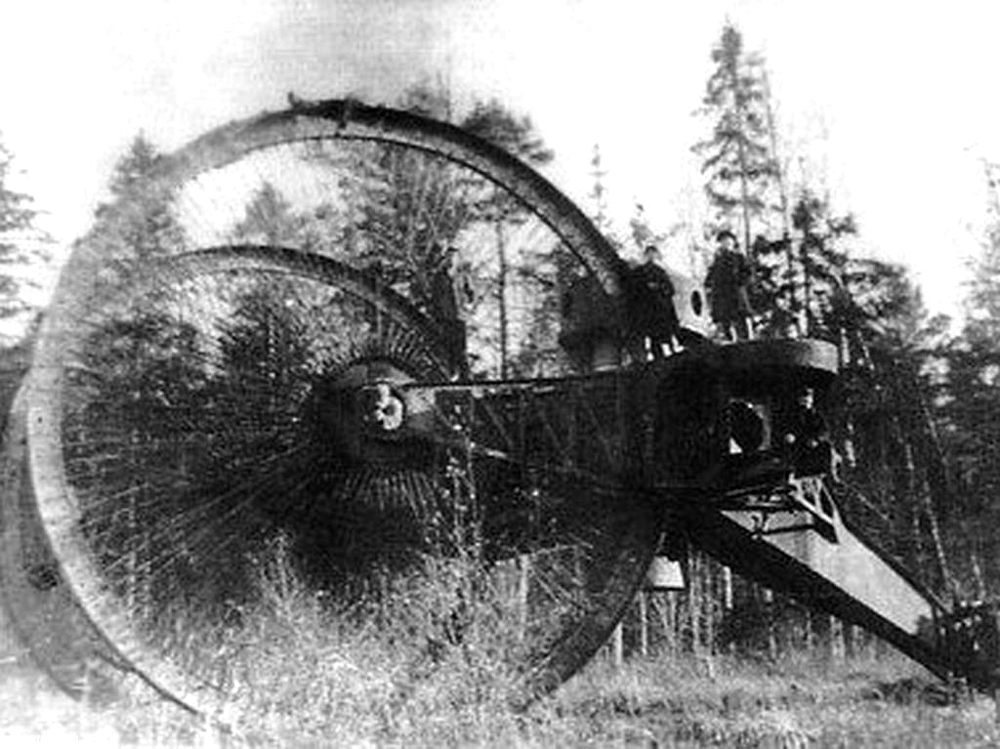
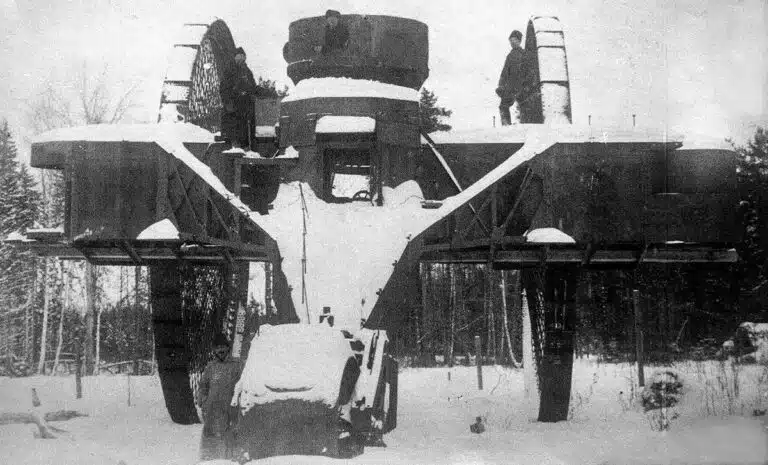
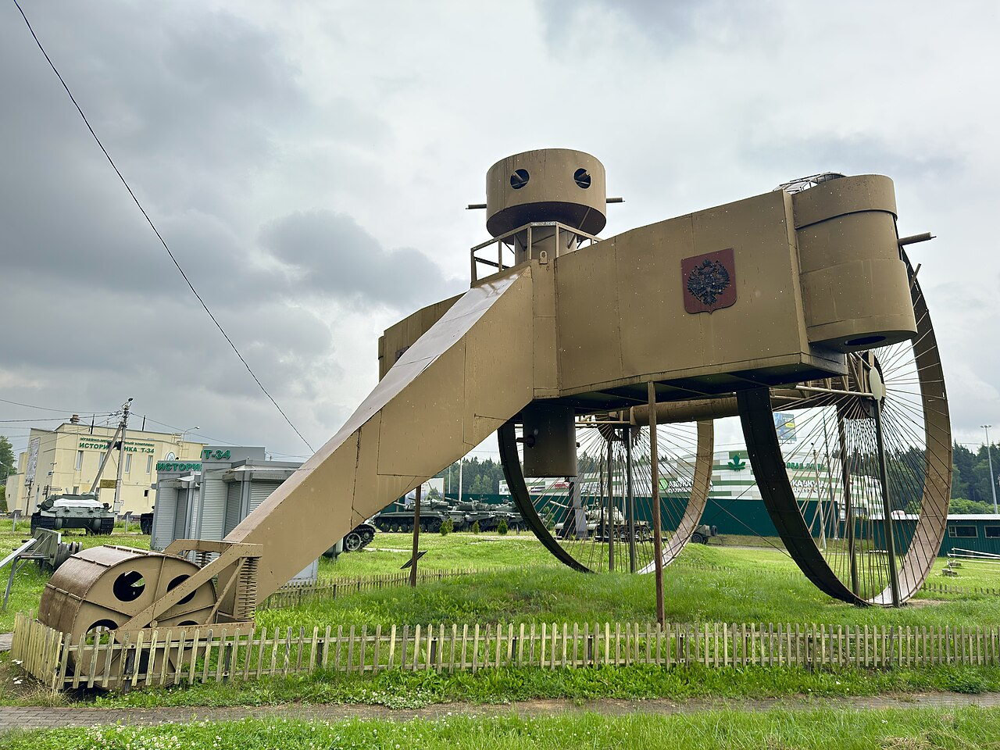
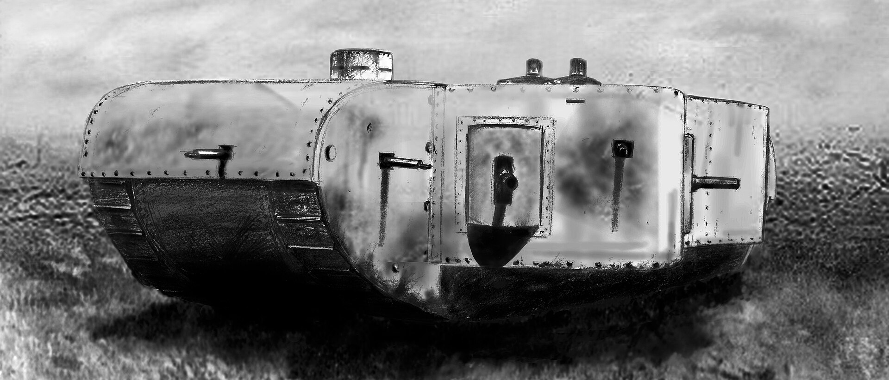
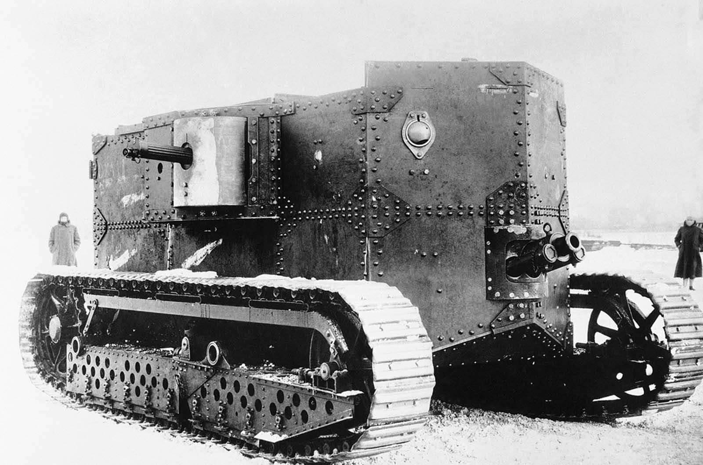

What makes a tank experimental?
During the First World War, military engineers explored a variety of armoured vehicle designs, many of which never reached the battlefield. Some were built and tested but ultimately abandoned, while others underwent substantial modifications before entering service. The distinction between an experimental tank, an unsuccessful prototype, and an unrealised concept is not always clear.
Explore Experimental Tanks!
Discover the unusual designs, ambitious engineering projects, and forgotten prototypes of the First World War!
Explore the Tanks
Tsar Tank
The Tsar Tank was a combat vehicle developed by Nikolai Lebedenko in the Russian Empire between 1914 and 1915. Strictly speaking, the vehicle was not a tank in the conventional sense of the term, but rather a wheeled combat vehicle. The machine was constructed and tested in 1915. Following the trials, it was concluded that the vehicle was generally unsuitable for combat use, leading to the cancellation of the project. The sole prototype was left to rust for many years in the forests of the Moscow region.
The vehicle's most distinctive feature was its unusual three-wheeled configuration. Two enormous front wheels, each approximately nine metres in diameter, were intended to overcome trenches, obstacles, and uneven terrain. Unlike the tracked tanks that would later dominate armoured warfare, Lebedenko's design relied on the size of its wheels to achieve cross-country mobility. Steering was provided by a much smaller rear wheel.

The prototype underwent trials near Dmitrov in August 1915. Initially, the machine demonstrated an ability to move across firm ground and overcome obstacles. However, the trials soon revealed a fundamental design flaw: the small rear wheel sank into soft ground under the vehicle's considerable weight. The front wheels could not pull the machine free. Combined with concerns about its vulnerability to artillery, this failure brought further development to an end. The abandoned prototype remained at the testing site until it was dismantled in 1923.

The size of the Tsar Tank becomes apparent when compared with the men standing on its platform, in the turret, and on the ground.

A scale model of the tank displayed at the T-34 Tank Museum.
Skeleton Tank
The Skeleton Tank was an experimental American tank built by the Pioneer Tractor Company in 1918. Its unusual open-frame design allowed it to cross trenches without the enormous weight of conventional British heavy tanks. The crew was housed in a small armoured compartment suspended between two long tracks. Only one prototype was constructed, and the vehicle never entered military service.

K-Wagen
The K-Wagen was a German super-heavy tank developed during the First World War between 1917 and 1918. Designed to break through heavily fortified enemy positions, it was intended to carry four 77 mm guns and seven machine guns. Due to its enormous size and weight, the vehicle had to be transported in separate sections and assembled near the front. Two prototypes were under construction, but neither was completed before the war ended.

Holt Gas-Electric Tank
The Holt Gas-Electric Tank was an experimental American tank developed in 1917–1918 by the Holt Manufacturing Company. It used a petrol-electric transmission, a highly unusual solution for an armoured fighting vehicle of its time. Although a prototype was built and tested, the tank proved slow, heavy, and mechanically unsatisfactory, and the project was not adopted for service.
